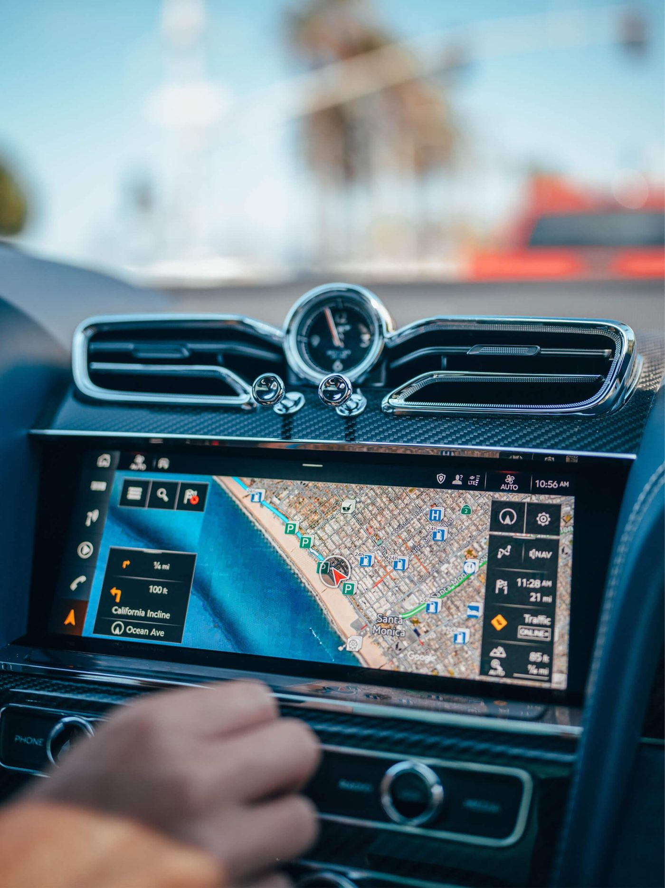
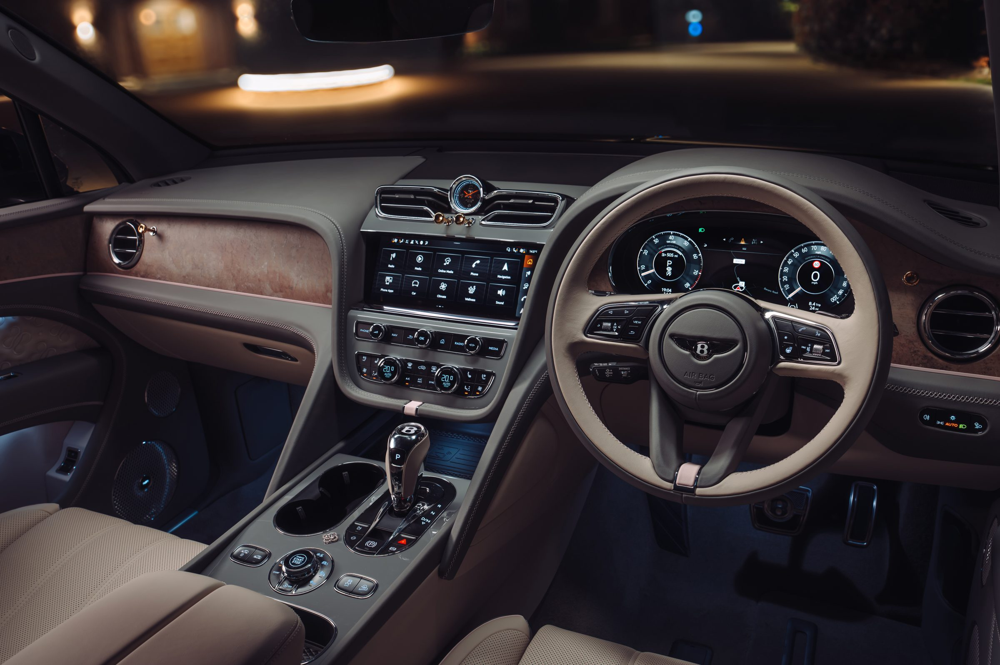
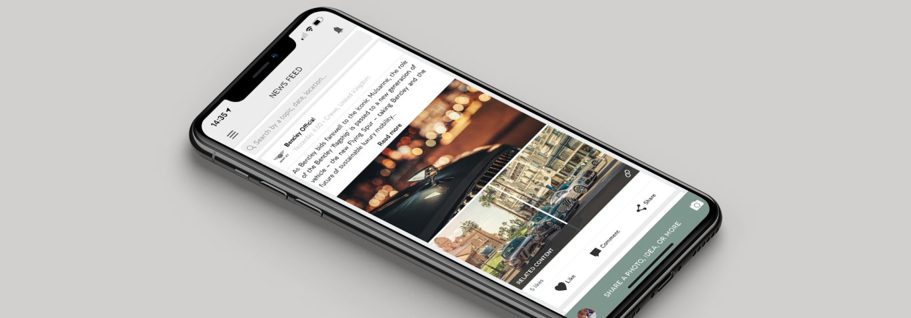
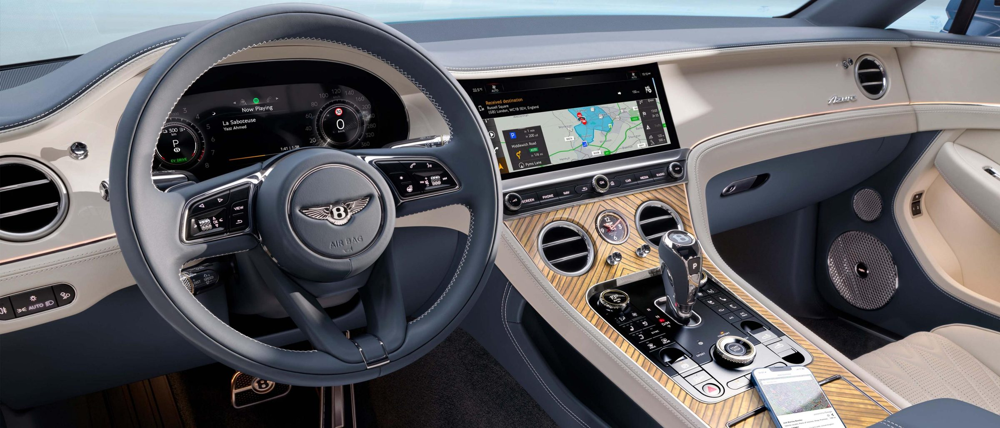

Bentley Motors
The challenge
When I joined, digital at Bentley was fragmented.
The interior UI team owned the in-car graphics. Sales and marketing owned the website and the Bentley network app. My Bentley sat between engineering and sales and marketing, treated as a marketable feature of the car rather than core technology. The in-car interface looked nothing like the apps.
At the same time, Bentley was about to build a wave of internal tools. Without a shared foundation, every new app would add more inconsistency. And there was no route for growing UX talent in-house: apprentices joined on general digital pathways.
How the team worked: Scout, Analyse, Implement, Transfer
Our Digitalisation and Innovation team didn't own products. Our job was to find what could move Bentley forward and get it running in the department that would own it.
- Scout: look for new technologies and ideas inside Bentley, across VW Group and externally.
- Analyse: test the value with tools like the value proposition canvas, make sure a business model sat behind it, then build prototypes and proofs of concept.
- Implement: work with the owning department, such as sales and marketing or engineering, to get it live.
- Transfer: once it proved its value, hand it over to business as usual and move on to the next opportunity.
One example was proposing a new mapping platform for the HMI and the app. It would let us strip out the clutter of a standard map and surface what mattered most to a Bentley driver: a more personal, curated map.
The UX playbook
In 2019 to 2020, I created Bentley's first UX playbook: a 60+ page guide to how Bentley apps should look and behave.
It covered styling, the placement of tab bars and navigation bars, how pages animate as you drill down through layers, and core components like buttons and input fields. Today you'd call it a design system with interaction guidelines.
It became the reference for every new app and feature. Sales and marketing used it for the Bentley network app, we used it for My Bentley, the internal apps and new concepts, and we started extending it to the website. The conversations it started with engineering went further: that functions in the car shouldn't each get their own app, but should live in one place, My Bentley.
My Bentley, built with VW Group
My Bentley was built with VW Group supplier Quartett Mobile, on the same technology as the Porsche and Audi apps.
With only a couple of dedicated developers, room for continuous improvement was tight, so we made the most of set windows working on-site in Munich.
Before each visit, we built a backlog of features with the developers. Because the platform was shared group technology, everything had to work with what Porsche and Audi ran, and the Quartett team were the experts in what was possible. On-site, we tested features on their in-car rigs, often with engineers in the room or on a call, so we could see ideas come to life.
Working within a shared platform meant choosing carefully where Bentley should differ. One example was a personal greeting: the home screen welcomed owners by name, alongside the name of their car, a small touch that made a shared product feel like Bentley.

Internal apps
Over my time there, we designed somewhere between five and ten internal apps for line workers, engineers and teams across the business. They included a library for Bentley's concept vehicles, and an app for scanning missing parts on the production line, so parts reached the line as quickly as possible and the line didn't have to stop.
Growing UX talent
I helped build a new digital talent pipeline, recruiting and mentoring 18 digital apprentices on general digital and data pathways.
When Manchester Metropolitan University set out to create a UX degree apprenticeship, they wanted the curriculum shaped by real employers rather than written in isolation. I represented Bentley in a series of workshops in Manchester, alongside employers such as the BBC. The result was the UK's first Digital UX degree apprenticeship: a four-year BSc (Hons) and Level 6 apprenticeship.
Bentley's apprentices now follow that UX pathway, and MMU's course page features a Bentley apprentice describing redesigning apps and presenting to heads of departments.
Outcome
Bentley's first design system, adopted across the customer apps, internal apps and concepts.
A one-app principle for in-car functions, centred on My Bentley.
A dedicated UX pathway for Bentley's apprentices, through the UK's first Digital UX degree apprenticeship.
Gallery



